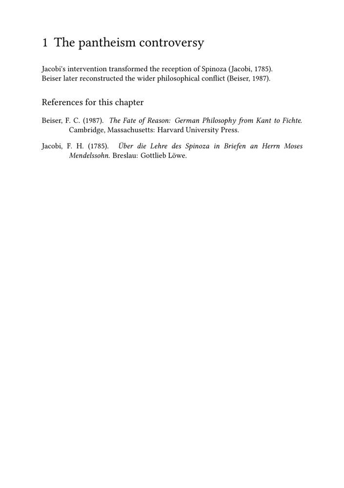

🚧 This page is under construction. Feel free to correct, expand, and improve it; its structure and examples may still change.
Bibliography guides — Guide 3 of 4
← Previous: Guide 2 — Understanding datasets, styles, renderings, selection, and sorting · Current: Guide 3 — Creating local and multiple bibliographies · Next: Guide 4 — Organising bibliographies in complex editorial projects →
Contents
- 1 1. Creating local and multiple bibliographies
- 2 2. Bibliography scope: method, criterium, and repeat
- 3 3. One dataset, several renderings
- 4 4. MWE: chapter bibliographies and a final bibliography
- 5 5. When to use several datasets
- 6 6. Two datasets and two independent dimensions
- 7 7. MWE: chapter bibliographies from two datasets
- 8 8. Choosing the right architecture
-
9
9. Common problems
- 9.1 9.1. The wrong rendering scope is used
- 9.2 9.2. A rendering is associated with the wrong dataset
- 9.3 9.3. Several renderings are confused with several datasets
- 9.4 9.4. A record appears in both a chapter and a final bibliography
- 9.5 9.5. A chapter bibliography contains unexpected records
- 9.6 9.6. A final bibliography omits a record shown in a chapter bibliography
- 9.7 9.7. A record appears in one chapter but not another
- 10 10. A practical diagnostic table
- 11 11. What you have learned
- 12 12. Related pages and commands
1. Creating local and multiple bibliographies
The previous guide distinguished the main layers of the bibliography system:
- bibliographic sources;
- datasets;
- specifications;
- citation alternatives;
- renderings;
- bibliography scope;
- repeated rendering;
- sorting rules;
- placement.
This guide applies those distinctions to documents that require more than one bibliography.
Typical editorial needs include:
- a bibliography at the end of each chapter;
- a final bibliography at the end of the document;
- several lists generated from one dataset;
- separate collections of primary and secondary literature;
- chapter-level lists associated with more than one dataset.
By the end of the guide, you should be able to:
-
distinguish the roles of
method,criterium,
and repeat;
- create chapter bibliographies and a final bibliography;
- define several renderings for one dataset;
- decide when several datasets are useful;
- combine structural scope with bibliographic classification;
- understand why one record may appear in several lists without being
duplicated in the data.
The central question
Before defining the bibliography architecture, decide whether you need:
- several views of one collection; or
- several genuinely distinct collections.
Several views normally require several renderings.
Several distinct collections may require several datasets.
2. Bibliography scope: method, criterium, and repeat
Chapter-level and final bibliographies depend on several different settings.
The three most important are:
method criterium repeat
They should not be treated as synonyms.
2.1. The role of method
The method setting controls how a rendering uses the bibliography
reference state available to it.
Common values include:
| Method | General role |
|---|---|
method=dataset
|
Uses records from the dataset itself, including records that may not have been cited. |
method=global
|
Uses bibliography references registered globally in the document. |
method=local
|
Uses a local rendering context rather than the global rendering state. |
The value local should not automatically be interpreted as
“the current chapter”.
Structural scope is controlled separately.
2.2. Structural scope with criterium
The setting criterium determines the structural or reference scope
requested for a bibliography rendering.
For example:
\placebtxrendering [chapterlist] [criterium=chapter]
restricts the rendering to the current chapter scope.
This distinction is essential:
method = rendering/reference-state behaviour criterium = structural or reference scope
A bibliography placed at the end of a chapter is therefore not a chapter bibliography merely because of its physical position.
Its structural scope should be expressed explicitly.
Placement and scope are independent
A bibliography may be physically placed at the end of a chapter while still using a document-wide or dataset-wide rendering scope.
The position of the list does not by itself determine which records it contains.
2.3. Reusing records with repeat
A record may already have appeared in an earlier bibliography rendering.
The option:
repeat=yes
allows such a record to be rendered again.
This is particularly important when:
- the same work is cited in several chapters;
- chapter bibliographies are followed by a final bibliography;
- several different renderings intentionally reuse the same record.
Thus:
method -> how the rendering uses bibliography state criterium -> which structural scope is requested repeat -> whether already rendered records may appear again
2.4. A common chapter-level pattern
A chapter bibliography may therefore use:
\placebtxrendering [chapterlist] [method=global, criterium=chapter, repeat=yes]
The three settings should be read separately:
-
method=globaluses bibliography references registered globally; -
criterium=chapterrestricts the rendering to the current chapter; -
repeat=yesallows records already rendered elsewhere to appear again.
A final bibliography may then use:
\placebtxrendering [finallist] [method=global, repeat=yes]
3. One dataset, several renderings
A dataset contains records.
A rendering defines a particular bibliography list constructed from those records.
Several renderings may therefore use the same dataset for different editorial purposes.
For example:
\definebtxrendering [chapterlist] [apa] [dataset=main, sorttype=authoryear] \definebtxrendering [finallist] [apa] [dataset=main, sorttype=authoryear]
The two renderings use the same records and specification, but they have different editorial roles.
The chapter rendering can be placed with:
\placebtxrendering [chapterlist] [method=global, criterium=chapter, repeat=yes]
The final rendering can be placed with:
\placebtxrendering [finallist] [method=global, repeat=yes]
3.1. Several renderings are several views
One dataset may feed:
- a chapter bibliography;
- a final bibliography;
- a complete catalogue;
- a list in dataset order;
- a list in author–year order;
- lists with different headings or typographical settings.
The renderings do not contain separate copies of the records.
3.2. The same record may appear in several lists
Suppose a work is cited in Chapter 1.
It may appear:
- in the bibliography at the end of Chapter 1;
- again in the final bibliography.
This is not a duplicated bibliographic record.
It is one record rendered in two editorial contexts.
One record, several editorial views
The record belongs to the dataset once.
Different renderings may display it in different parts of the document.
4. MWE: chapter bibliographies and a final bibliography
The following self-contained example uses one dataset and two renderings.
-
\mainlanguage[en] \setuppapersize[A5] \setuplayout [backspace=18mm, topspace=15mm, width=middle, height=middle, header=0pt, footer=8mm] \setupbodyfont [libertinus,9.5pt] \startbuffer[biblio] @Book{beiser1987, author = {Beiser, Frederick C.}, title = {The Fate of Reason}, subtitle = {German Philosophy from Kant to Fichte}, publisher = {Harvard University Press}, address = {Cambridge, Massachusetts}, year = {1987}, } @Book{jacobi1785, author = {Jacobi, Friedrich Heinrich}, title = {Über die Lehre des Spinoza in Briefen an Herrn Moses Mendelssohn}, publisher = {Gottlieb Löwe}, address = {Breslau}, year = {1785}, } @Article{ameriks1981, author = {Ameriks, Karl}, title = {Kant's Deduction of the Categories}, journal = {The Monist}, year = {1981}, volume = {64}, number = {4}, pages = {451--470}, } \stopbuffer \usebtxdataset [main] [biblio.buffer] \usebtxdefinitions [apa] \definebtxrendering [chapterlist] [apa] [dataset=main, sorttype=authoryear] \definebtxrendering [finallist] [apa] [dataset=main, sorttype=authoryear] \starttext \chapter{The pantheism controversy} Jacobi's intervention transformed the reception of Spinoza \cite[authoryear][main::jacobi1785]. Beiser later reconstructed the wider philosophical conflict \cite[authoryear][main::beiser1987]. \subject{References for this chapter} \placebtxrendering [chapterlist] [method=global, criterium=chapter, repeat=yes] \chapter{Kant and the categories} Ameriks analyses the structure of Kant's deduction \cite[authoryear][main::ameriks1981]. \subject{References for this chapter} \placebtxrendering [chapterlist] [method=global, criterium=chapter, repeat=yes] \chapter{Final bibliography} \placebtxrendering [finallist] [method=global, repeat=yes] \stoptext
-

The intended result is:
- the first chapter bibliography contains Jacobi and Beiser;
- the second chapter bibliography contains Ameriks;
- the final bibliography contains all three records.
| Element | Role |
|---|---|
main
|
Dataset containing all records |
chapterlist
|
Rendering used for chapter bibliographies |
finallist
|
Rendering used for the final bibliography |
method=global
|
Uses bibliography references registered globally in the document |
criterium=chapter
|
Restricts the chapter rendering to the current chapter scope |
repeat=yes
|
Permits records already rendered in an earlier list to appear again |
About repeated placement
When chapter bibliographies are rendered before the final bibliography, records already rendered in a chapter list must be allowed to appear again if they are also required in the final list.
For that reason, repeat=yes is normally part of this
chapter-plus-final pattern.
5. When to use several datasets
Several datasets may be useful when the records belong to stable and meaningfully distinct editorial collections.
Examples include:
- primary texts and secondary literature;
- archival sources and printed scholarship;
- works cited by the historical author and works cited by the editor;
- bibliographic collections belonging to independent parts of a project;
- editions and translations treated as independent editorial collections.
For example:
\usebtxdataset [primary] [primary-sources.bib] \usebtxdataset [secondary] [secondary-literature.bib]
References can then be qualified explicitly:
\cite [authoryear] [primary::hegel1820]
and:
\cite [authoryear] [secondary::beiser1987]
Do not create several datasets merely to obtain several headings
If the records belong to one collection and differ only in presentation, several renderings may be sufficient.
Use several datasets when the distinction is stable, structural, and useful for citation or bibliography organisation.
5.1. Several datasets are not always necessary
Primary and secondary literature can be separated into two datasets, but this is an editorial choice rather than a universal rule.
A project may instead use:
- one dataset with several renderings;
- one dataset with project-specific classifications;
- several source files loaded into one dataset;
- several datasets when the collections must remain explicitly distinct.
The architecture should follow the needs of the project.
6. Two datasets and two independent dimensions
When several datasets are used, two editorial dimensions operate together:
- the dataset identifies the bibliographic collection;
-
criteriumidentifies the structural scope requested for a rendering.
The rendering method remains a separate setting.
For example:
\definebtxrendering [localprimary] [apa] [dataset=primary, sorttype=authoryear] \definebtxrendering [localsecondary] [apa] [dataset=secondary, sorttype=authoryear]
At the end of a chapter:
\subject{Primary sources used in this chapter} \placebtxrendering [localprimary] [method=global, criterium=chapter, repeat=yes]
and:
\subject{Secondary literature used in this chapter} \placebtxrendering [localsecondary] [method=global, criterium=chapter, repeat=yes]
The first rendering asks, in editorial terms:
Which records from the primary dataset belong to the current chapter scope?
The second asks:
Which records from the secondary dataset belong to the current chapter scope?
The dataset and the chapter criterion answer different questions:
dataset -> which collection? criterium -> which chapter or structural scope?
7. MWE: chapter bibliographies from two datasets
The following example defines two datasets and two chapter-scoped renderings.
-
\mainlanguage[en] \setuppapersize[A5] \setuplayout [backspace=18mm, topspace=15mm, width=middle, height=middle, header=0pt, footer=8mm] \setupbodyfont [libertinus,9pt] \startbuffer[primary] @Book{hegel1820, author = {Hegel, Georg Wilhelm Friedrich}, title = {Grundlinien der Philosophie des Rechts}, publisher = {Nicolai}, address = {Berlin}, year = {1820}, } @Book{jacobi1785, author = {Jacobi, Friedrich Heinrich}, title = {Über die Lehre des Spinoza}, publisher = {Gottlieb Löwe}, address = {Breslau}, year = {1785}, } \stopbuffer \startbuffer[secondary] @Book{beiser1987, author = {Beiser, Frederick C.}, title = {The Fate of Reason}, subtitle = {German Philosophy from Kant to Fichte}, publisher = {Harvard University Press}, address = {Cambridge, Massachusetts}, year = {1987}, } @Article{ameriks1981, author = {Ameriks, Karl}, title = {Kant's Deduction of the Categories}, journal = {The Monist}, year = {1981}, volume = {64}, number = {4}, pages = {451--470}, } \stopbuffer \usebtxdataset [primary] [primary.buffer] \usebtxdataset [secondary] [secondary.buffer] \usebtxdefinitions [apa] \definebtxrendering [localprimary] [apa] [dataset=primary, sorttype=authoryear] \definebtxrendering [localsecondary] [apa] [dataset=secondary, sorttype=authoryear] \starttext \chapter{Law and freedom} Hegel's account of right provides the primary text \cite[authoryear][primary::hegel1820]. Beiser supplies the historical reconstruction \cite[authoryear][secondary::beiser1987]. \subject{Primary sources used in this chapter} \placebtxrendering [localprimary] [method=global, criterium=chapter, repeat=yes] \subject{Secondary literature used in this chapter} \placebtxrendering [localsecondary] [method=global, criterium=chapter, repeat=yes] \stoptext
-

The first list contains the record used from primary in the
current chapter.
The second list contains the record used from secondary in the
same chapter.
The unused records remain available in their datasets but do not appear in these chapter-scoped lists.
8. Choosing the right architecture
| Editorial requirement | Recommended architecture |
|---|---|
| One final bibliography | One dataset and one rendering placed with method=global
|
| One bibliography at the end of each chapter | One dataset and one rendering placed with method=global and criterium=chapter
|
| Chapter bibliographies and a final bibliography | One dataset with chapter and final renderings; use criterium=chapter for chapter lists and repeat=yes where records must reappear
|
| Complete catalogue and cited bibliography | One dataset with one rendering using method=dataset and another using method=global
|
| The same collection in different orders or formats | Several renderings from one dataset |
| Primary and secondary collections that must remain structurally distinct | Separate datasets and separate renderings |
| Editions and translations treated as independent collections | Separate datasets may be appropriate |
| Chapter-level primary and secondary bibliographies | Two datasets, two renderings, and criterium=chapter
|
Choose the simplest architecture that preserves the editorial distinctions
Do not multiply datasets or renderings without a clear purpose.
A stable and readable architecture is preferable to a large number of nearly identical lists.
9. Common problems
9.1. The wrong rendering scope is used
The setting:
method=dataset
can include records from the complete dataset, whether cited or not.
A chapter bibliography normally requires an explicit chapter criterion:
criterium=chapter
Do not use method=local as a synonym for “current chapter”.
9.2. A rendering is associated with the wrong dataset
A rendering such as:
\definebtxrendering [secondarylist] [apa] [dataset=primary]
cannot render records stored only in secondary.
Check the dataset attached to every rendering.
9.3. Several renderings are confused with several datasets
Several renderings provide several views.
Several datasets provide several collections.
Do not duplicate bibliographic data merely because the document contains several bibliography headings.
9.4. A record appears in both a chapter and a final bibliography
This is normally intentional.
A chapter-scoped rendering and a final document-wide rendering may both use the same bibliographic record.
The record remains stored only once in the dataset.
9.5. A chapter bibliography contains unexpected records
Check:
-
whether
criterium=chapteris used; - whether the rendering is placed inside the intended chapter scope;
- whether the citations belong to the expected dataset;
- whether the records were registered in the intended structural context;
-
whether
method=datasetis unintentionally including uncited records.
9.6. A final bibliography omits a record shown in a chapter bibliography
Check:
- whether the final rendering uses the expected dataset;
-
whether it uses
method=globalwhen a bibliography of used records is intended; -
whether
repeat=yesis needed; - whether the record was actually cited or otherwise registered;
- whether the document has been processed again after structural changes.
9.7. A record appears in one chapter but not another
If the same record is cited in several chapters and chapter bibliographies are placed repeatedly, check whether:
repeat=yes
is required.
The structural criterion and the repeat policy answer different questions:
criterium=chapter -> does the record belong to this chapter scope? repeat=yes -> may it be rendered again?
10. A practical diagnostic table
| Symptom | Check first |
|---|---|
| A chapter bibliography is empty | Rendering dataset, qualified keys, chapter placement, and criterium=chapter
|
| A final bibliography is empty | Rendering dataset, registered citations, and method=global
|
| An uncited record appears | Whether method=dataset was used
|
| A primary source appears in the secondary list | Dataset loading and rendering association |
| A record appears in two lists | Whether two renderings intentionally include it |
| A record shown in a chapter bibliography is missing from the final bibliography | Final rendering scope and repeat=yes
|
| A list contains records from another structural unit | Placement context and criterium
|
| A record cited in two chapters appears only in the first bibliography | repeat
|
11. What you have learned
This guide has shown how datasets, renderings, structural scope, and repeated rendering combine to produce chapter-level and multiple bibliographies.
| Question | Mechanism |
|---|---|
| Which collection contains the record? | Dataset |
| Which bibliography list is being produced? | Rendering |
| Which bibliography reference state is used? | method
|
| Which structural or reference scope is requested? | criterium
|
| Should every stored record be available to the rendering? | method=dataset
|
| May a record already shown in another list appear again? | repeat=yes
|
The main principles are:
- one dataset can feed several renderings;
- several renderings provide several views of the same records;
- several datasets may represent stable and distinct editorial collections;
- chapter-level and final bibliographies can render the same record without
duplicating it in the data;
-
the dataset and
criteriumanswer different editorial questions:
the dataset identifies the collection, while the criterion identifies the requested structural scope;
-
repeatcontrols whether an already rendered record may be used
again.
The essential distinction is:
dataset -> which collection? method -> which rendering/reference state? criterium -> which structural scope? repeat -> may an already rendered record appear again?
Continue with:
Guide 4 — Organising bibliographies in complex editorial projects
The next guide explains how to integrate datasets, renderings, citation commands, chapter-level bibliographies, and final lists into a structured multifile project.
12. Related pages and commands
- References notes and floats/Bibliography and citations
- Creating a bibliography and citing sources
- Understanding bibliography datasets, styles, renderings, selection, and sorting
- Organising bibliographies in complex editorial projects
- Bibliography-related commands
- \usebtxdataset
- \usebtxdefinitions
- \cite
- \definebtxrendering
- \setupbtxrendering
- \placebtxrendering
- \placelistofpublications
Bibliography guides — Guide 3 of 4
← Previous: Guide 2 — Understanding datasets, styles, renderings, selection, and sorting · Current: Guide 3 — Creating local and multiple bibliographies · Next: Guide 4 — Organising bibliographies in complex editorial projects →